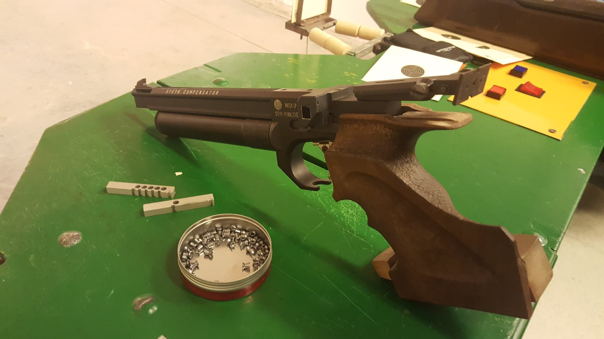
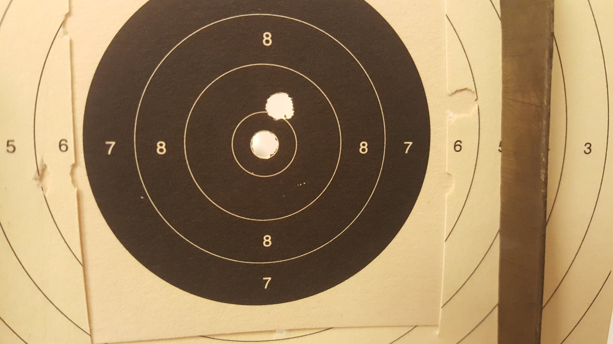
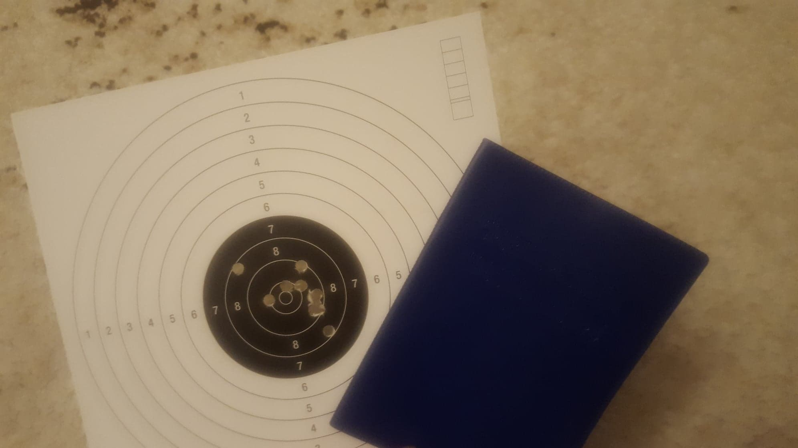
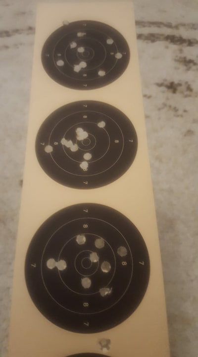
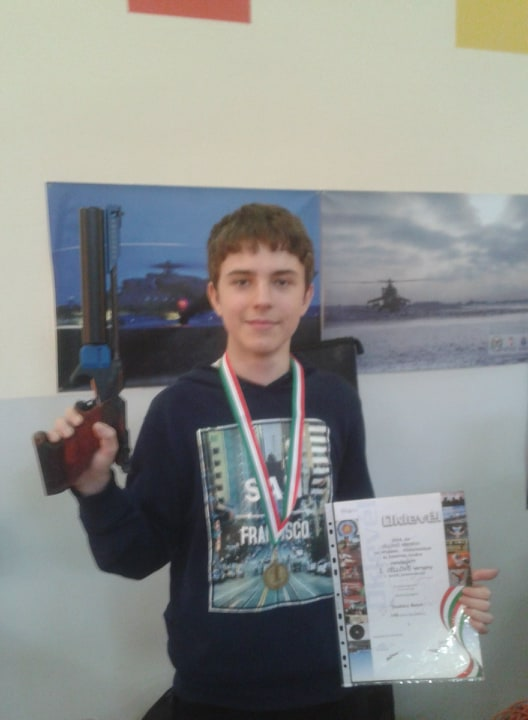

LÖVÉSZET
Két részletben jártam sportlövészetre, 2013-14 ben illetve 2018-tól napjainkig. Légpisztollyal versenyzek, mert ott valamivel gyengébb a mezőny, mint az éleslövészeten. 10 körös versenyen 8,8-9 kör szokott összejönni, ami versenyszinten még bőven a mezőny második fele.
   